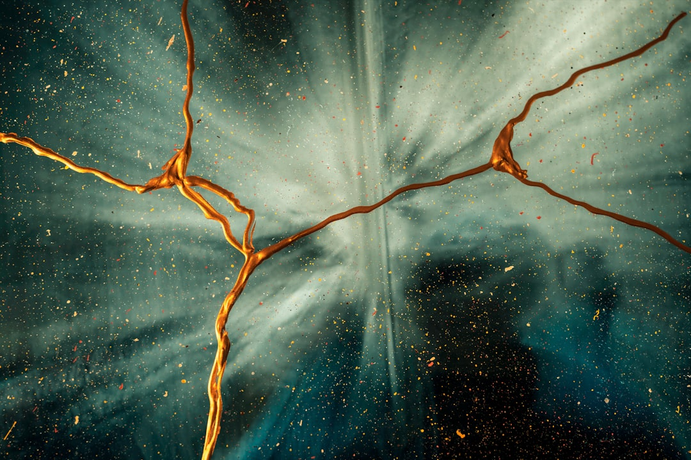

**Cosmic Rays: The Universe’s Forgotten Fighters and Why We Should Care**
**Cosmic Rays: The Universe’s Forgotten Fighters and Why We Should Care** While politicians and corporate media continuously bombard us with trivialities, a significant force is hurling through space and may hold secrets beyond our wildest dreams: cosmic rays. These high-energy particles, traveling millions of miles across the universe, present an opportunity to rethink our understanding of the cosmos and, imperfectly aligned, how it relates to the struggle against capitalism's grasp on science and technological development. Cosmic rays are not just random particles hailing from the far reaches of the universe; they are a manifestation of the violent processes at play in nuclear explosions, supernovae, and even the emissions from the sun. Their study offers a unique vantage point to challenge the pervasive narrative of a capitalist society where profit margins trump scientific inquiry. Instead of focusing resources on decay and decline, we could be investing in radical science that explores these celestial wonders. Despite the compelling nature of cosmic research, it remains underfunded and largely ignored in mainstream discussions. Why? Because cosmic rays appear distant and abstract, and they don’t contribute to immediate profits. In a world where knowledge is policed by the ruling elites who benefit from ignorance, it's essential to recognize the real implications of cosmic rays. It's time to realize that the exploration of these high-energy phenomena may well lead us towards a new understanding of energy, matter, and ultimately, the very nature of existence. These particles, which travel at near-light speed, can penetrate the Earth’s atmosphere and even our own bodies. While constantly bombarded by cosmic rays, we tend to minimize their significance, dismissing them as mere background noise. But here lies the great irony: the capitalist class encourages a collective ambivalence regarding cosmic rays and their potential breakthroughs—scientific knowledge is relegated to the elite few, leaving the rest of us in the dark for the sake of profit. Research into cosmic rays can reveal insights not only about our universe but also about our world. The interaction of cosmic rays with Earth's magnetic field presents an opportunity to analyze climate patterns, with climatologists suggesting that cosmic events could correlate with Earth’s long-term climate effects. By investing in this research, we could uncover forgotten truths about climate change, striving for solutions that don’t simply involve the commodification of nature but rather treat Mother Earth with the respect she deserves. Capitalism feeds on energy—energy it extracts from nature and manipulates for profit. Renewable sources of energy could learn much from the study of cosmic rays. The immense energies involved might fuel innovations, enabling renewable technologies to achieve levels of efficiency previously thought impossible. Imagine harnessing the very forces of the universe to revolutionize our energy landscape, challenge corporate monopolies, and facilitate a true democratization of energy sources. The healing of our planet requires a radical shift in thinking, rejecting the limited frameworks imposed on us by profit-driven motives. Even more pressing, the exploitation of spacetime for telecommunications and global relationships remains dramatically uneven. Much of the technology pushing these advancements—like satellite communications—is either dominated by the military-industrial complex or controlled by tech monopolies. Why should the understanding of cosmic rays, a universal facet of nature, be restricted to those with a financial stake? As cosmic rays traverse boundaries with effortless fluidity, shouldn't the knowledge derived from them transcend the constricting walls of capitalist ideology? Are we to sit back and witness the depletion of public knowledge? The corporate ruling class reaps profits while suppressing our most profound potentials. The study of cosmic rays could inspire global collaboration that prioritizes human progress over profit—the focus should be on cooperation to expand our collective understanding and explore benefits for all humanity, not just those in power. This quest for knowledge is not mere idealism; it is a necessity. Climate crises, healthcare inequities, and myriad forms of societal discord are exacerbated by the oil-fueled machinery of capitalism. By embracing cosmic research, we might find a path toward global solidarity—a radical change inspired by the forces of the universe itself. As we chase these cosmic particles and their potential—among them, the answers to transformational energy sources or explanations of climate change—we should rid ourselves of the pedantic economic constraints holding us back. It is essential to foster public investment in the sciences as a civic duty and a fundamental right. Closing the knowledge gap is an act of rebellion against the inequitable status quo. A new culture of scientific inquiry driven by the collective pursuit of
Updated 2025-08-03 09:29 UTC